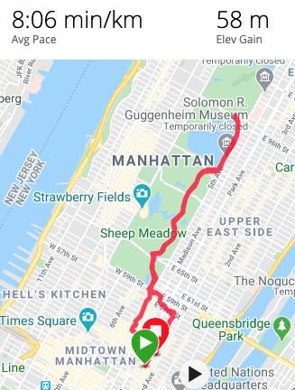
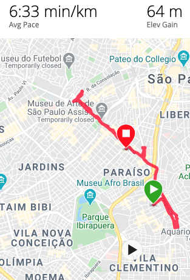

Bruno Gurgel
July 31, 2020
The Runners Tears
Have you ever cried during your favorite exercise?
This title may sound weird to you. You may think, “Are you ok?”, “Do you need help?”, “Are you injured?” but, wait, I’ll try to make my point over the next few paragraphs.
In “true acceptance” I wrote about my journey, facing all my silent beliefs to start over. Exercises will always be an important part of this life transition. Swimming, skateboarding, cross training and cycling were already part of my life in some way, but running was not. Running was just too much for me.
During the transition, practice street running made me learn a lot. First, joining a street running group is much more than just practicing with fellow runners, there are many different purposes and stories to other runners. I was able to listen to them, to practice empathy and to understand everybody has their own story, happy or sad, but we are all on our own journeys. Second, I started to learn there is a lot of science in running, from breathing techniques to shoulder positioning, from the way your feet touch the ground to the direction of your hands, and I like science. Third, no matter how many miles you run you will always need to bring your focus back to you. For all this amazing knowledge a big thanks to @outrafe running crew!
Running is one of the unique spots that starts with, “It will be a block, and never ends”.(Brittany runs a marathon)I feel challenged with every extra mile to be completed or attempt to complete it 10 seconds faster, but it will NEVER be about the finish line, at least for me. Running has been the best way I can connect myself with my body, breathing, posture, rhythm and mind. And it just does not work on a treadmill, it needs to be outside, I need to fill the wind, see people passing by, faster or slower, watch the landscape in the park or on a crowded avenue.

While I’m running, truly connected with myself, I take the time to plan things I’ll need to do, connect the dots, be thankful for the great things I have done so far, be thoughtful for all my mistakes, challenge myself to think about what should be my best new version. While running I can face my best ideas and also my worst and darkest thoughts. Yep, we reached the point where I tell you I have once cried running.
I have a strange relation with the act of crying, and it was not easy to accept. I’m still in the journey of imagining a better version of myself, to challenge myself further, to face and address all the bad thoughts in a safe spot in my mind, to get rid of my silent beliefs. I guess running has been a huge help to get myself out of my comfort zone, again in the path towards my true acceptance. Crying while running is great evidence that I’m pushing myself to exercise acceptance, getting out of my comfort zone, trying to address things in my mind that may hurt in real life, things I might never do if I was not running.

Finally, we need to figure out what makes us get out of our auto-pilot mode. What challenges us to create our best version, what subject in life we may not have well addressed, what we regret and what we are proud of, and this may not be easy to do while sitting on our couch or laying in our bed. All these reflections are part of my life transition and running has now taken a crucial place in it.